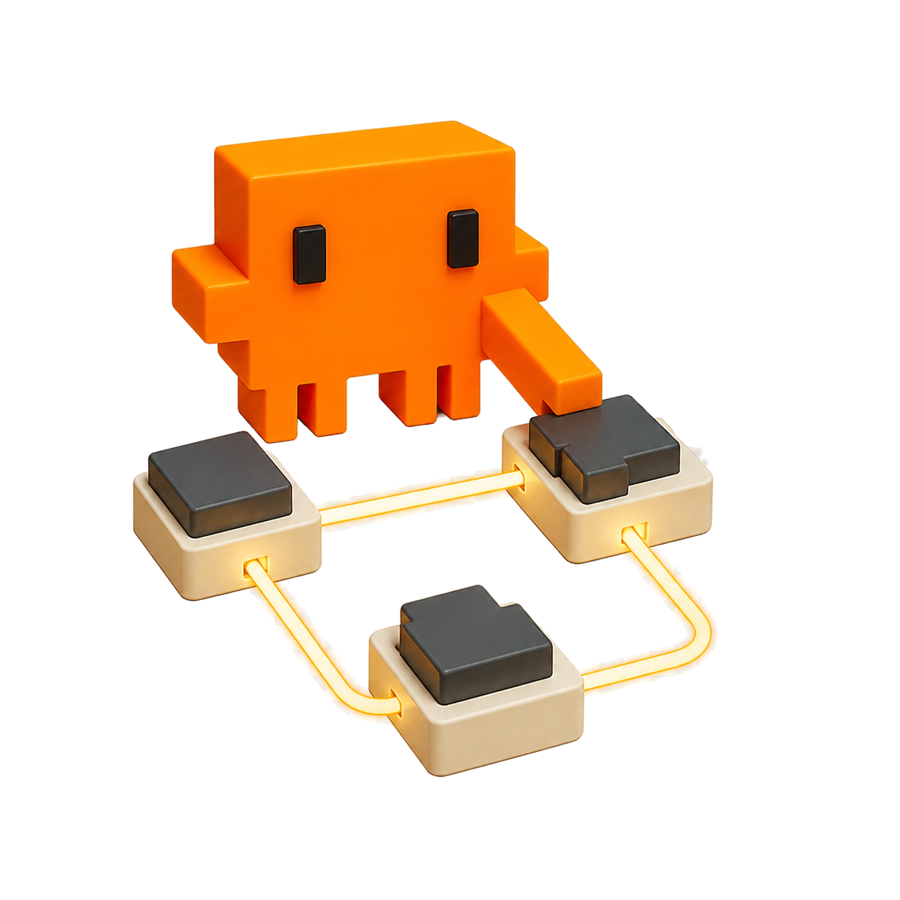
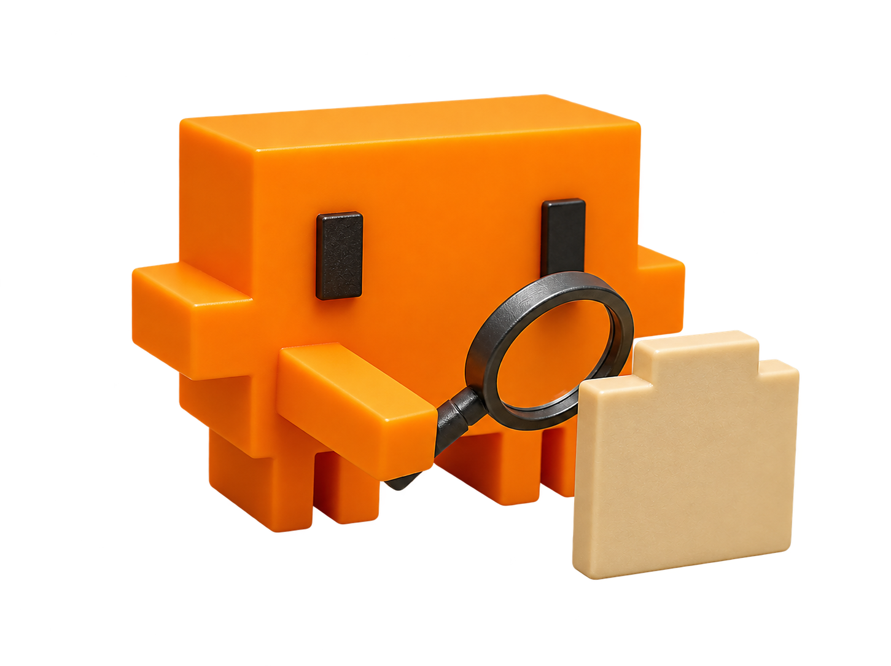
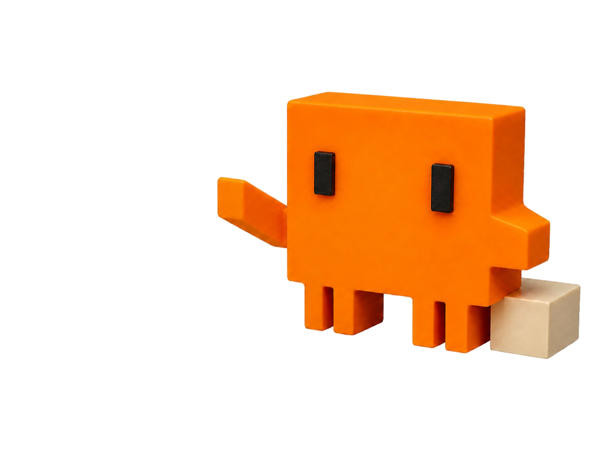

Theme preview
Clawd system
Tactile orange mascot energy, dark workshop surfaces, and a clear path from idea to artifact.
01
Make it real
A reset before the next move
The map visual gives the audience a visual breath while the narrative changes direction.
Clawd in motion
One mascot, three useful beats

Build

Inspect

Present